地政学
カイロはエジプト国家の中枢で、ナイル流域、スエズ運河、地中海と紅海、アラブ外交、アフリカ政策を結ぶ。軍、政府、報道、宗教権威が近く、地域政治の緊張も街に映る。水外交と国境管理も日常の背景にある都市。
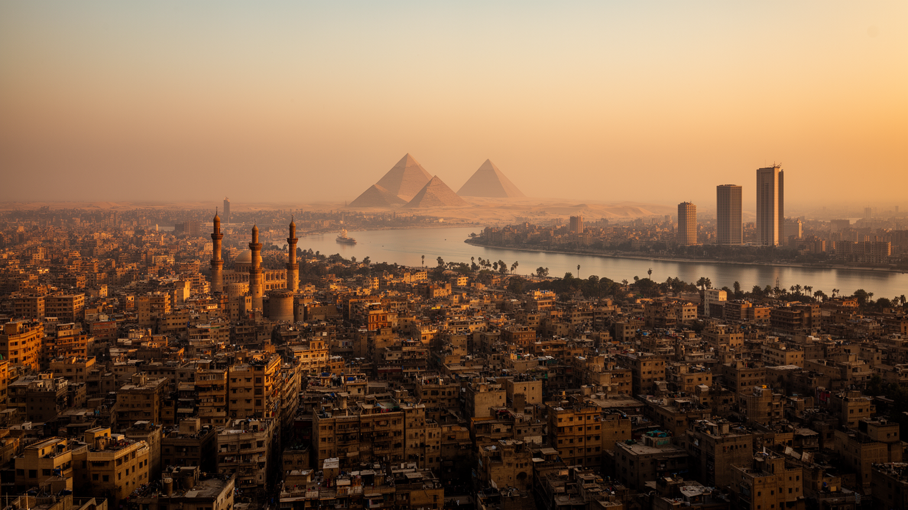
🇪🇬 エジプト / アフリカ / World City Atlas
ナイル川、砂漠、イスラム旧市街、政府機能、映画と出版、ギザの遺産、密集住宅が重なり、アラブ世界とアフリカ北東部を結ぶ巨大首都圏。
都市の骨格
カイロは川沿いの農地、砂漠へ伸びる新都市、旧市街の宗教空間、ギザの観光、行政とメディアを一つの通勤圏で結ぶ。
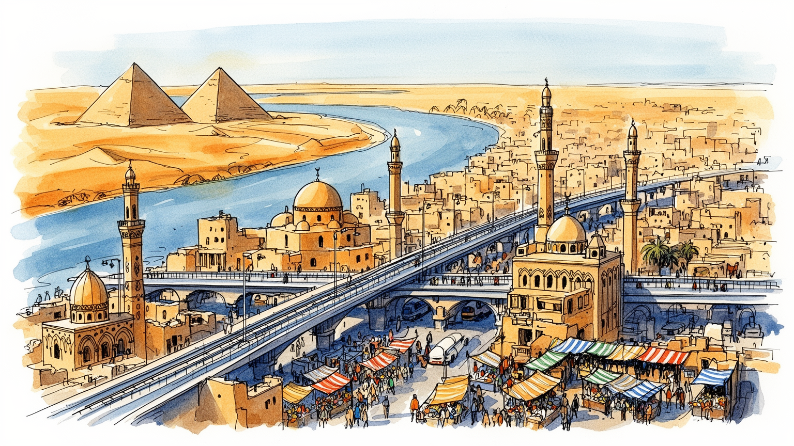
カイロはエジプト国家の中枢で、ナイル流域、スエズ運河、地中海と紅海、アラブ外交、アフリカ政策を結ぶ。軍、政府、報道、宗教権威が近く、地域政治の緊張も街に映る。水外交と国境管理も日常の背景にある都市。
行政、金融、建設、観光、映画、出版、繊維、食品、交通の仕事が集まり、露店、工房、配送、家事労働も都市を支える。若者雇用、物価、非公式経済が生活を左右する。賃金と移動時間も家計を圧迫する大都市である。
イスラム旧市街、コプト地区、大学、映画館、カフェ、書店、音楽が並び、祈りと娯楽が日常を形づくる。アズハルの学問、モスクの音、教会の暦が都市の時間を刻む。断食月の夜も文化を動かす大都市である。今も続く。
ピラミッドや博物館の近くに、渋滞、住宅不足、パン、地下鉄、露店、家族の外出がある。旅の壮大な景観と住民の生活費、暑さ、空気、水の問題が同じ街路で交わる。観光収入も暮らしに直結する大都市である。今も。
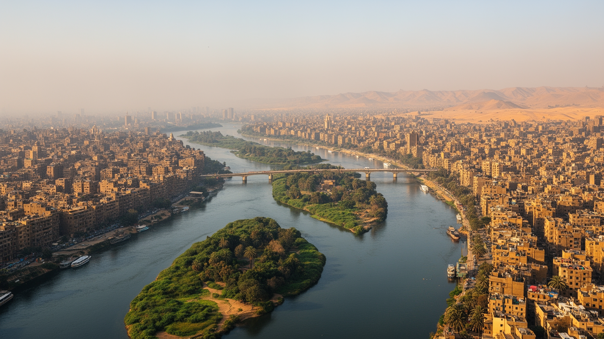
カイロの地理は、ナイル川の水と周囲の砂漠を同時に見ることで理解しやすい。都市は川の両岸と中州、デルタへ向かう低地、ギザ側の台地、東西の砂漠道路に沿って広がり、農地、住宅、政府機関、観光地、新都市が細長くつながる。水は古代から食料と交通の基盤であり、現在も飲料水、緑地、橋、川沿いの高級住宅、ホテル、遊覧船を通じて都市の価値を作る。一方で、人口増加と開発は農地を圧迫し、砂漠へ伸びるニュータウンは通勤時間とインフラ負担を増やす。川沿いの涼しさと砂漠の暑さ、旧市街の密集と郊外の広い道路は、住民の暮らし方を大きく分ける。ナイルは絵葉書の景観ではなく、都市が膨張しても生活を保つための限られた軸である。橋の位置は通勤、学校、病院、買い物の時間を決め、川を渡るだけで家賃や職場への近さが変わる。農地の端に住宅が迫る場所では、食料を支える土地と住む場所の競合が見える。砂漠の新道路は開発を進めるが、徒歩や公共交通に頼る人を中心から遠ざけることもある。カイロの地図は、川に寄り添う都市と砂漠へ逃げる都市が同時に描かれた緊張の地図である。さらにデルタへ向かう北側の平地は、農村、工業地、郊外住宅を連続させ、首都圏の境界を曖昧にする。水路、排水、橋、堤防の管理は、地図に細く見える線でありながら、食料価格や通勤、洪水時の安全を左右する。
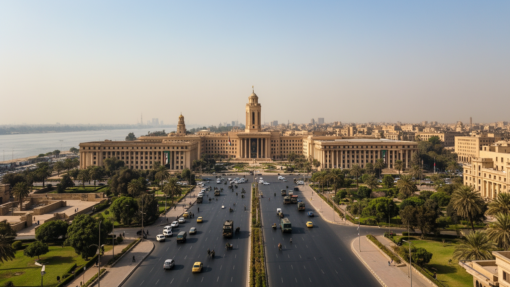
カイロはエジプトの首都であり、行政、軍、司法、国営企業、報道、大学、宗教権威が集中する政治都市である。タハリール広場周辺の官庁や博物館、ナイル東岸の省庁街、郊外へ移る新行政首都の計画は、国家が都市空間をどう使うかを示している。広場や橋は交通施設であると同時に、抗議、式典、警備、記憶の場所でもある。二〇一一年の革命とその後の政治変化は、都市の中心が単なる商業地ではなく、市民と権力が向き合う舞台であることを強く印象づけた。政府機能の一部を砂漠の新都市へ移す動きは、混雑緩和と安全管理を目指すが、古い中心部の雇用、通勤、象徴性をすぐには消せない。カイロの首都性は、制度が街路の緊張として現れる点にある。大使館、国際機関、新聞社、テレビ局、大学の研究者も集まり、国内政策と地域外交の言葉が同じ地区で作られる。スエズ運河、安全保障、ガザ情勢、ナイル水利、移民政策は遠い国際問題ではなく、首都の会議室と家庭のニュースに入ってくる。強い国家機能は都市に仕事を与えるが、監視、交通規制、表現の制約も日常に近づける。首都の道路は大統領行事や国際会議で急に意味を変え、警備の柵や迂回路が住民の予定を動かす。国家の存在は巨大な建物だけでなく、身分証、補助金、兵役、学校制度、メディアの言葉として家庭の中にも入り込む。街へ。
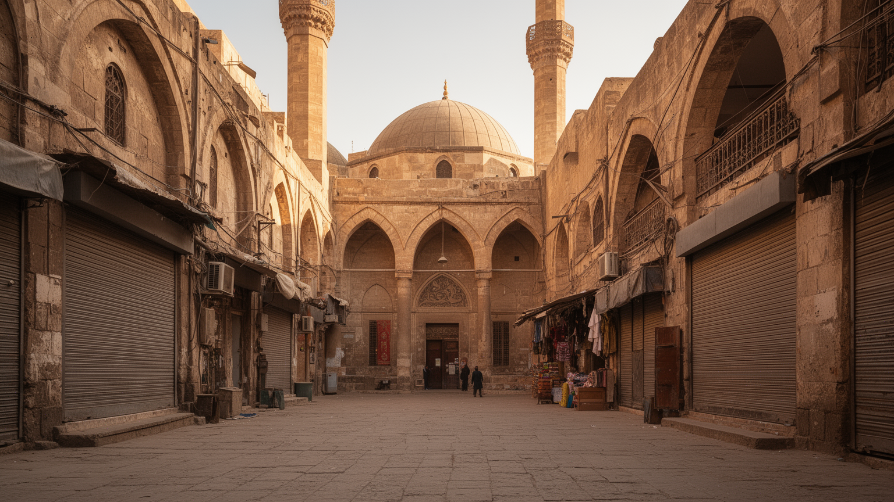
イスラム・カイロの旧市街は、モスク、マドラサ、霊廟、門、市場、職人街が折り重なる歴史的な都市である。アズハル、フセイン地区、ハーン・ハリーリの路地では、信仰、学問、商い、観光が近い距離で混ざり、祈りの時間が街の音を変える。石造建築の装飾や狭い路地は世界遺産として注目されるが、そこは住民が働き、買い物をし、子どもを育てる生活空間でもある。保存は建物を美しく見せるだけでは足りず、老朽住宅、交通、ゴミ、家賃、観光客の流れ、職人の継承を同時に扱う必要がある。宗教建築を眺めるだけでは、都市の厚みは見えない。礼拝後の食堂、工房の音、土産物店の交渉、路上の混雑まで含めて、旧市街はカイロの歴史が今も働く場所である。アズハルの学問はエジプト国内だけでなく、広いイスラム世界の議論にも影響を与えてきた。金属加工、香辛料、衣料、書籍、香水の店は観光客に向けて変わりながら、地域の需要にも応える。保存地区で暮らす人にとって、歴史は誇りであると同時に、修繕費や規制、混雑を伴う重い現実でもある。祭礼や金曜礼拝の日には、人の流れ、店の開け方、交通の速度が変わる。古い門や通り名は支配王朝の記憶を残すが、現在の住民はその石の間で家賃を払い、学校へ送り、生活用品を買う。遺産は過去ではなく、暮らしの条件である。今も街を動かす。
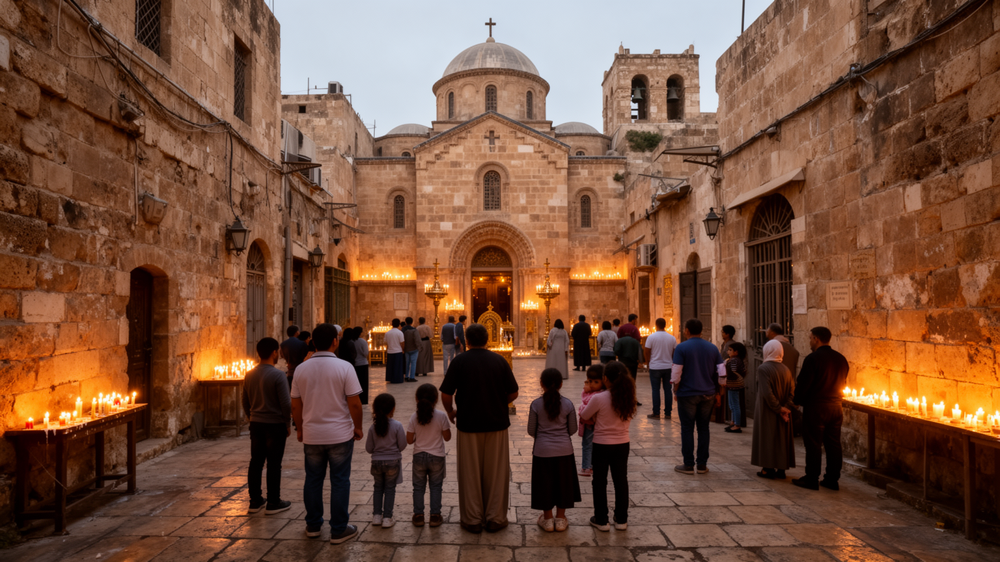
カイロ南部のコプト地区は、エジプトがイスラム都市であるだけでなく、古いキリスト教の記憶を抱える場所であることを示す。吊り教会、聖堂、修道院、狭い路地、博物館は、ローマ支配、ビザンツ、イスラム化、近代国家の時間を一つの地区に重ねる。コプト教徒はエジプト社会の重要な少数派であり、宗教行事、学校、福祉、家族のつながりを通じて都市生活に深く関わってきた。宗派間関係は日常の共存と政治的緊張の両方を含み、教会の警備や祝祭の混雑には社会の不安も映る。観光客にとっては静かな歴史地区に見えるが、住民にとっては信仰、身分、教育、雇用、近隣関係が結びつく生活の場である。コプト地区を歩くことは、カイロの宗教地図を単色にしないための入口になる。礼拝、断食、結婚、葬儀、聖人祭は家族の予定と地域の交通を変え、宗教は私的な信念だけでなく都市の時間割を作る。教会付属の学校や慈善活動は、教育と福祉の重要な支えにもなる。多宗教都市としてのカイロを見るには、共存の美談だけでなく、不安を抱えながら日常を続ける住民の工夫も見る必要がある。観光ルートとして整えられた通りの外側にも、普通の住宅、商店、学校が続く。少数派の歴史を守ることは建物保存にとどまらず、差別を減らし、安心して働き学べる環境を保つことでもある。日々の祈りも続く。
ギザのピラミッドとスフィンクスは、カイロを世界地図に刻む強力な象徴である。だが遺産は都市の外に孤立した古代景観ではなく、ホテル、道路、博物館、土産物店、馬車、ガイド、警備、清掃、写真撮影、交通渋滞と結びつく現代の観光経済でもある。大エジプト博物館の整備は、古代遺産を新しい展示と都市インフラに接続する大事業であり、訪問者の流れをギザ側へ強く引き寄せる。観光収入は外貨、雇用、国家イメージを支える一方、政治不安、感染症、為替、治安報道に影響を受けやすい。観光地周辺では客引き、価格交渉、道路整備、住民生活、遺跡保護のバランスが難しい。ピラミッドを見ることは古代だけでなく、遺産を生計に変える現代カイロの労働を見ることでもある。遺跡の保存には発掘や修復だけでなく、周辺の下水、道路、住宅、警備、観光教育が関わる。訪問者が増えるほど、地域の収入は増えるが、混雑や価格上昇も起きる。古代王権の壮大な石造物は、現代の家族経営や若いガイドの不安定な収入と隣り合っている。朝の光や夕景を待つ観光客の背後で、馬の世話、車両整理、水の販売、清掃が続く。遺産を守るとは、石を守るだけでなく、周辺で働く人が乱暴な競争に追い込まれない仕組みを作ることでもある。旅程の短い訪問者ほど遺跡だけを見て去るが、ギザは住宅地、学校、商店のある生活圏でもある。
カイロの経済は、政府機関、銀行、通信、建設、不動産、観光、映画、出版、食品、繊維、家具、修理業が厚く重なる。オフィス街や大型商業施設の成長は目立つが、都市を毎日動かすのは露店、ミニバス、修理工房、小売店、家事労働、配送、清掃、警備、飲食の膨大な仕事である。公式な雇用だけでは生活を支えきれない人も多く、非公式経済は弱さであると同時に、家族と地域が生き延びるための柔軟な仕組みでもある。若者は大学を出ても安定した職に届きにくく、物価上昇と通貨安は賃金の価値を削る。建設ブームは仕事を生むが、住宅価格や郊外化の負担も増やす。カイロを経済都市として見るなら、企業や観光収入だけでなく、路上で働く人の時間、交渉、移動、休息まで含めて読む必要がある。女性の労働参加、通勤の安全、保育、家族の期待も就業を左右する。職人街では技能が親族や弟子へ受け継がれる一方、安い輸入品や家賃上昇が小さな工房を圧迫する。都市経済の強さは、数字の大きさより、働く人が食費、交通費、住居費を払って生活を続けられるかに表れる。外貨不足や輸入価格の変動は、工場の材料、薬、家電、食料の値段に波及する。観光や建設が伸びても、安定した社会保障や技能教育が弱ければ、若い世代は将来を描きにくい。経済の厚みは希望と不安を同時に増やす。家計へ直結する。
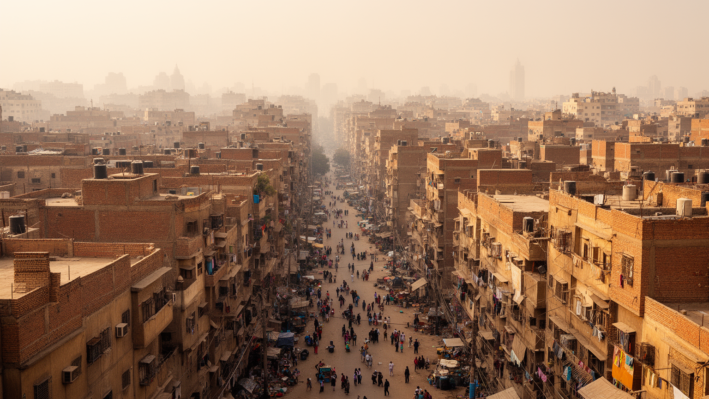
カイロの住まいは、旧市街の老朽住宅、ナイル沿いの高級集合住宅、非公式に拡大した地区、砂漠のニュータウン、ギザ側の住宅地まで幅広い。人口増加は長く住宅不足を生み、家族は増築、同居、未完成建物、遠距離通勤で対応してきた。赤茶色の未完成住宅が並ぶ景観は、計画の失敗だけでなく、資金ができるたびに階を足し、親族の将来の住まいを確保する生活戦略でもある。砂漠の新都市は広い道路と新しい住宅を提供するが、仕事、学校、病院、公共交通が十分でなければ、暮らしは車と長い移動に縛られる。都心の密集地では、家賃、老朽化、災害リスク、公共空間の不足が重い。住宅問題は建物の数だけでなく、家族形成、若者の結婚、女性の移動、教育、仕事への到達を左右する社会問題である。屋上や階段室、路地の小さな店は、密集地で足りない公共空間を補う役割も持つ。再開発や立ち退きは安全性を高める場合がある一方、長い近隣関係や安い家賃を失わせる。住宅を読むことは、誰が中心に残れ、誰が砂漠の遠い団地へ押し出されるのかを読むことでもある。建物の未完成部分は貧しさだけでなく、税制、相続、将来の子どもの部屋をめぐる計算も映す。密集地の近所づきあいは助け合いを生むが、火災、倒壊、衛生、プライバシーの不足も抱える。住まいは家族の希望と都市計画の矛盾が交わる場所である。
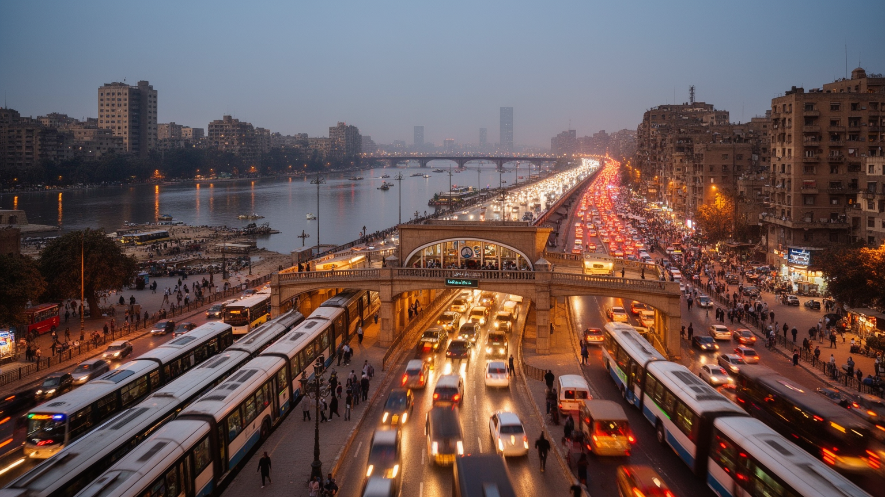
カイロの移動は、ナイルを渡る橋、地下鉄、国鉄、ミニバス、タクシー、配車サービス、徒歩が複雑に組み合わさっている。都市圏が広がるほど通勤距離は伸び、渋滞は時間、燃料、空気、家族の生活を奪う。地下鉄はアフリカとアラブ世界で重要な都市鉄道として、中心部、ギザ、郊外を結び、女性専用車両や駅前の商いも含めて独自の公共空間を作っている。それでも路線だけで巨大な需要を吸収することは難しく、ミニバスや相乗りの交通が細かな地区を補う。新しい道路や高架橋は車の流れを改善する一方、歩行者の横断、古い街路、商店、歴史景観を分断することもある。カイロの交通を読むことは、都市の便利さだけでなく、誰が長時間移動し、誰が駅や車に届かないのかを見ることである。通勤の遅れは職場の評価、学校の到着、診療予約、家族の夕食まで連鎖する。女性や高齢者、障害のある人にとっては、混雑や歩道の状態が外出の自由を左右する。交通政策は道路を増やすだけでなく、駅まで歩ける環境、運賃、治安、空気の質を同時に考える必要がある。駅前には露店や乗り継ぎの呼び込みが集まり、交通は小さな商いの場にもなる。燃料価格が上がれば運賃と食品価格に響き、渋滞は単なる不便ではなく家計の問題になる。移動の公平さは、都市の社会的な距離を測る物差しである。毎朝問われる。
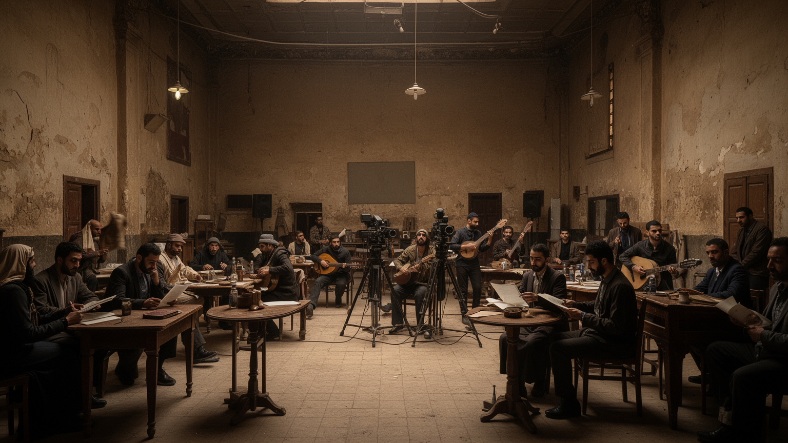
カイロは長くアラブ世界の映画、音楽、出版、新聞、テレビ、教育の中心の一つだった。エジプト映画のスター、歌手、作家、風刺、連続ドラマ、ラマダン番組は、方言や物語を広域に届け、カイロの街角を文化的な基準点にした。ダウンタウンのカフェ、劇場、書店、大学、編集部、録音スタジオは、政治的な議論と娯楽を同じ都市の空気に置く。検閲、資金不足、移民、デジタル化、湾岸資本との関係は制作環境を変えているが、カイロの文化的な厚みは簡単には消えない。街のユーモア、口語表現、結婚式の音楽、屋台の会話、サッカーの熱狂も文化の一部である。文化都市としてのカイロを見るなら、名作映画や博物館だけでなく、日常の言葉と笑いがどのように広がり、人びとの不安を和らげるのかも重要になる。制作現場には俳優や監督だけでなく、照明、衣装、翻訳、編集、配信、警備、食事を支える仕事がある。文学や音楽は政治の圧力を受けながら、比喩や冗談で社会を語ってきた。カイロの文化力は、華やかな作品と、街角で共有される即興の言葉の両方から生まれる。大学街やカフェで交わされる議論は、失業、結婚、宗教、政治、移民を身近な言葉に変える。海外へ移った作家や制作者も、カイロの記憶を作品に持ち込む。文化は都市から離れても、方言と風景を通じて戻ってくる。声として残る。
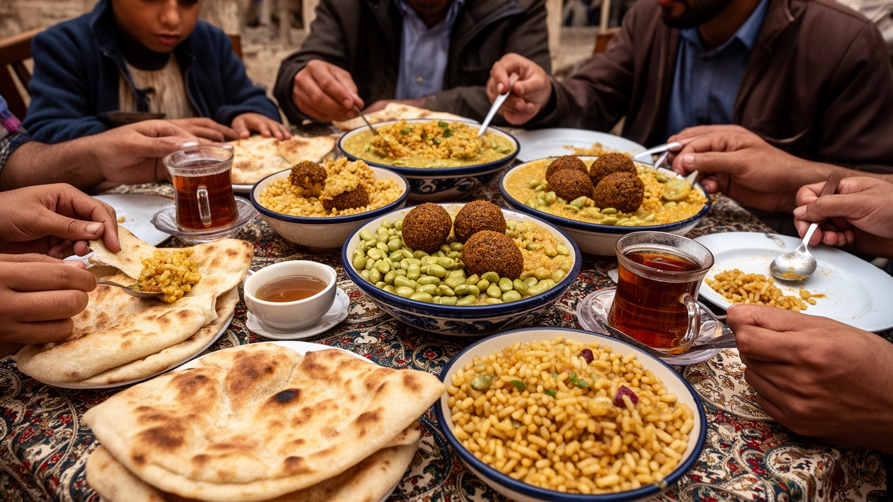
カイロの日常は、パン、豆料理、米、野菜、茶、甘い菓子、屋台の軽食、家族の食卓によって支えられる。アエーシュと呼ばれるパンは、単なる主食ではなく、補助金、物価、行列、家計、国家との関係を映す食べ物である。フール、タアメイヤ、コシャリ、シャワルマ、ジュース店、カフェの水たばこは、通勤者、学生、労働者、家族連れをつなぐ。市場では野菜、肉、香辛料、日用品が狭い路地に並び、交渉と顔なじみの関係が生活を支える。食の豊かさの背後には、輸入小麦、燃料価格、冷蔵物流、露店規制、衛生、女性の家事負担がある。観光客が味わう料理は、住民にとっては物価上昇に耐える毎日の選択でもある。カイロの食を読むことは、都市の階層、家族、国家政策を読むことにつながる。ラマダンの断食明けには通りの時間が変わり、家族や近隣の関係が食卓に表れる。安い食堂は低所得の働き手を支え、菓子店やカフェは祝い事や交友の場になる。食料価格が上がると、献立だけでなく、結婚式、贈り物、外出、子どもの弁当まで影響を受ける。家庭料理は女性の無償労働に支えられ、外食の安さは長時間働く店員や仕入れの工夫に支えられる。食卓は愛情の場であると同時に、物価、補助金、為替、家族内の役割分担が最も早く現れる場所である。だから市場の値段は政治の話題にもなる。毎日問われる。
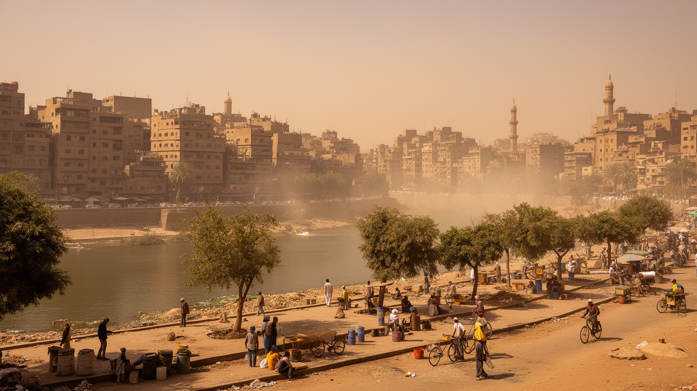
カイロは乾燥した砂漠気候の都市で、夏の暑さ、砂ぼこり、大気汚染、限られた緑地、水需要が生活の質を左右する。自動車、工場、建設、廃棄物、砂嵐は空気を悪化させ、呼吸器の健康や屋外労働に負担をかける。ナイルの水は都市の生命線だが、人口増加、農業、上流国との水利用、気候変動は水資源を政治と生活の問題にする。暑い季節にはエアコンへの依存が高まり、電力費や停電の不安が家計を圧迫する。緑地や日陰の少ない地区では、子ども、高齢者、屋外で働く人ほど熱の影響を受けやすい。環境対策は景観整備ではなく、健康、労働、交通、住宅、水外交を結ぶ課題である。カイロの未来は、川の水を守りながら、暑さに耐える公共空間を増やせるかにかかっている。ゴミの回収やリサイクルを担う人びとは、衛生と都市経済の重要な一部だが、危険で低く見られがちな仕事に置かれる。木陰、公園、涼める公共施設は、観光の飾りではなく命を守る設備である。気候変動が暑さを強めるほど、住宅の断熱、交通の排出、廃棄物処理、水の配分は一体の政策になる。砂ぼこりの多い日は洗濯、屋台、学校の運動、観光の予定まで変わる。水道や排水の不備は低所得地区ほど重く、環境の負担は均等ではない。空気と水の質は、都市の階層差を静かに可視化する。日陰一つも福祉である。健康を左右する問題。
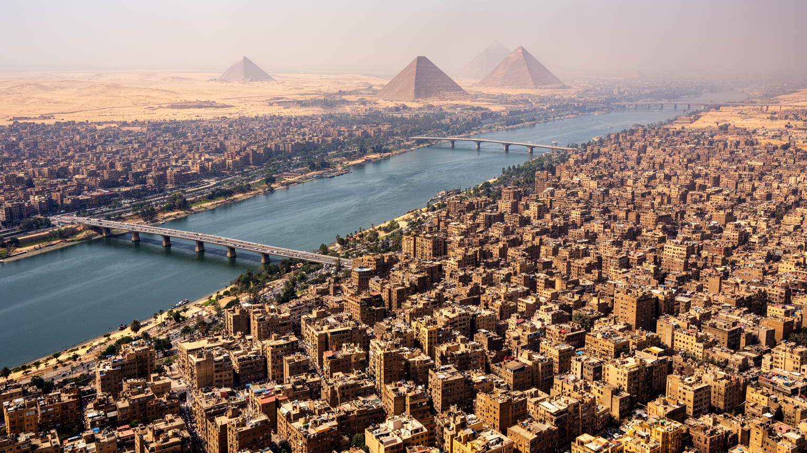
カイロは、古代遺産の壮大さだけで語るにはあまりに現代的で、混雑や貧困だけで語るにはあまりに文化的な厚みを持つ。ナイルの橋、イスラム旧市街、コプト地区、ギザの台地、タハリール広場、地下鉄、砂漠の新都市、露店、市場、映画館、大学、モスク、教会が一つの都市圏で互いに押し合っている。国家の中枢であることは雇用と権威を集めるが、政治的な緊張も中心部に刻む。観光は外貨と誇りをもたらすが、住民の暮らしは物価、住宅、渋滞、暑さ、水に左右される。宗教は対立の記号ではなく、学校、福祉、家族、暦、音として街を形づくる。カイロを読むには、ピラミッドを遠景に置きながら、パンを買う列、地下鉄の混雑、礼拝の声、若者の仕事探しを同じ地図に載せる必要がある。都市の強さは、遺産と国家機能と日常の商いが近距離で結びつく点にある。同時に、その近さは騒音、混雑、格差、環境負荷を強める。カイロは完成した博物館都市ではなく、古い記憶を抱えたまま、水、仕事、住宅、信仰をめぐって毎日調整される生きた首都である。朝の通勤、昼の礼拝、夕方の渋滞、夜のカフェは、別々の風景ではなく同じ都市の呼吸である。数字で測れる規模と、家族が感じる生活費の重さを重ねて見ると、カイロの輪郭はより立体になる。都市の評価も変わる。そこに理解が生まれる視点がある。